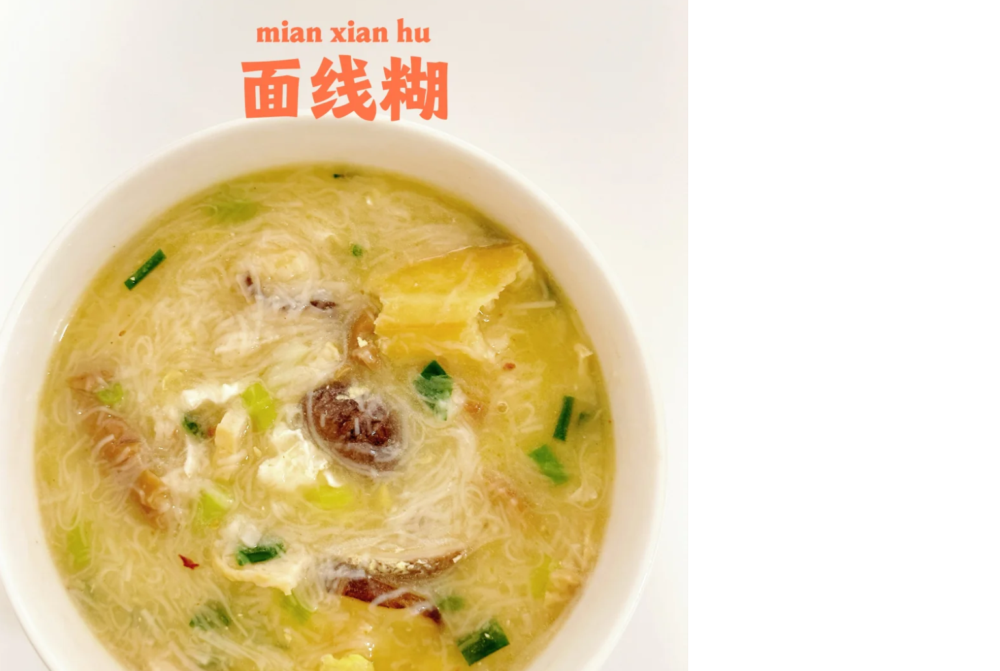

面线糊
泉州传统小吃，以红薯淀粉制成的面线，配以虾米、猪肉末等，口感软糯，汤汁鲜美。
面线糊
由猪骨汤和海鲜汤熬制，搭配醋肉、虾等配菜，细腻不粘稠。冬日暖身必备。
泉州西街是品尝地道泉州小吃的最佳去处，这里汇集了泉州最具特色的传统美食。
泉州传统小吃，以红薯淀粉制成的面线，配以虾米、猪肉末等，口感软糯，汤汁鲜美。
由猪骨汤和海鲜汤熬制，搭配醋肉、虾等配菜，细腻不粘稠。冬日暖身必备。
泉州特色小吃，糯米裹入猪肉、板栗、香菇等馅料，蒸熟后烧制，香气四溢，口感软糯。
糯米与猪肉、板栗、香菇等完美融合，搭配沙茶酱或辣椒酱，风味独特。
闽南特色小吃，以新鲜海蛎和地瓜粉为主料，煎制金黄，外酥内嫩，鲜美可口。
冬春时节最佳，海蛎与地瓜粉煎至金黄，口感滑嫩，味道鲜美。
泉州特色面食，以独特的卤汁调味，配以猪肉片、青菜，汤汁浓郁，面条劲道。
特制卤汁，搭配香菇、猪肉，面条劲道，汤底细腻厚实。
泉州传统特色小吃，糯米包裹猪肉、香菇等馅料，口感软糯，香味浓郁。
糯米与猪肉、板栗、香菇等完美融合，搭配沙茶酱或辣椒酱，风味独特。
泉州特色甜点，以糯米粉制成，包裹花生、芝麻等馅料，软糯香甜，寓意团圆。
特制馅料：花生碎、芝麻碎、糖冬瓜、炸葱头，皮嫩糯滑，别具风味。
泉州传统甜点，以优质芋头制成，口感绵密，香甜可口，是当地人喜爱的小吃。
采用泉州本地优质芋头制作，口感细腻，香甜可口。